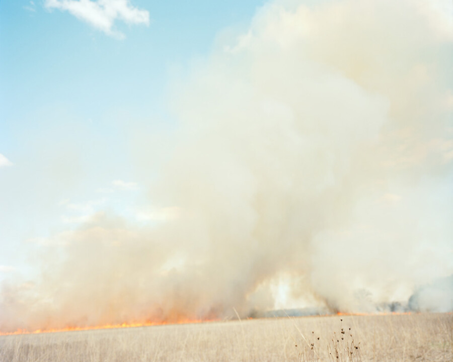

Context 2026
Filter Photo is pleased to present Context 2026, our twelth annual survey exhibition of contemporary photography. This year’s edition was juried by Sara Ickow, Associate Director of Exhibitions at the International Center of Photography, and features the work of 25 artists.
“Photography can be many things. It can slip between genres, complicate fact and fiction, mix media, blend old and new—all while expanding how we perceive and understand the world. The works in Filter Photo’s Context 2026 exemplify the broad forms a photograph can take, representing practices including collage, analog and digital photography, and alternative processes.
Beyond their varied and inventive practices, the artists represented here have also found ways to spark nuanced conversations and respond thought-provokingly in a turbulent moment. They touch on timely topics from climate to immigration and themes including aging, intimacy, loss, and discovery in their works. Their images provide the tools of understanding, inviting us to open our hearts and minds.
Whether placing us on a front porch, a simulated far-off planet, a school classroom, or a rural landscape, the works in Context 2026 transport us to other realities. Whether reminiscent of our own experiences or not, these realities challenge us to consider new ideas and experiences different from our own, or to look with fresh eyes at things we think we understand. These personal and careful images come together here to create a conversation that serves as a balm and an activating force in confusing and fearful times.” —Sara Ickow
Featured Artists
Andrés Altamirano
Mark Ambruster
Joshua Aronson